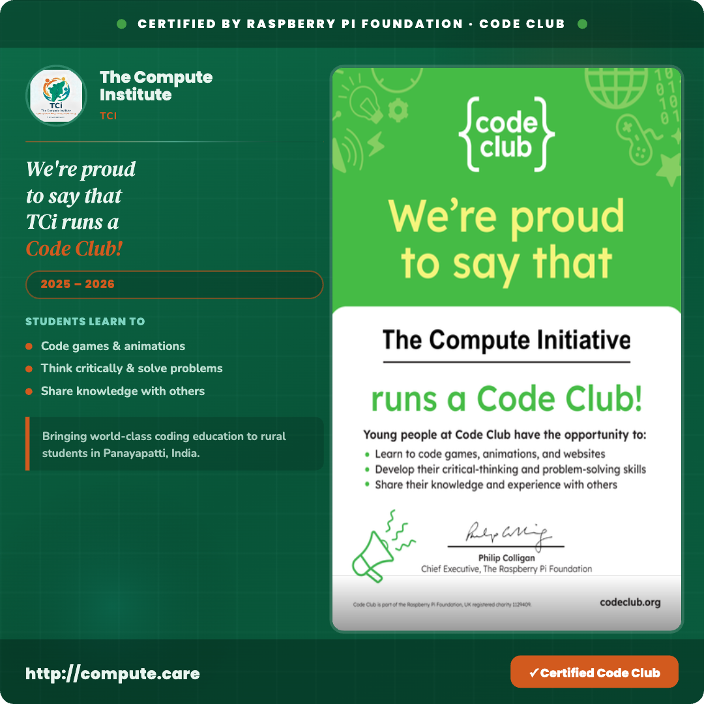

2026
A second school joins the journey
The computer lab at Kuruvikondanpatti extends our daily computer science program to a second community, with Saranya joining as a local instructor.

Events & milestones
From our first lab to a second school, each step grows from the work of students, teachers, and a wider community.
The computer lab at Kuruvikondanpatti extends our daily computer science program to a second community, with Saranya joining as a local instructor.
TCI distributed 300 books to students at partner schools, supporting reading and learning beyond the computer lab.

TCI is officially registered as a Code Club, part of the Raspberry Pi Foundation’s global network. Anish and Anuj are recognised as Code Club leaders and mentors.

Anish and Anuj joined the SRM Arunachalam staff for a Student Recognition Ceremony in Panayapatti, celebrating students’ progress in computer science since the lab opened.
The Panayapatti inauguration brought together students, educators, community leaders, and S. Ragupathi, who officiated the ceremony. It marked the start of a continuing commitment to computer science learning.

Everyday moments
Select a photo to take a closer look.
A place for you in this story
Support a classroom, share your skills, or start a conversation.